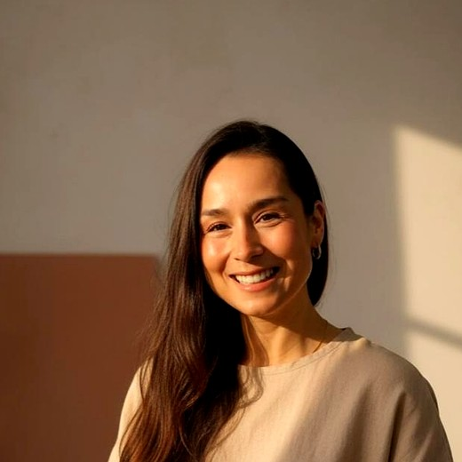

Tatiana Ayala · Libre y Natural
Vuelve a la vida.
Limpieza intestinal · Desparasitación · Alimentación consciente alineada a tu biorritmo
Ver el protocolo de 21 días Taller práctico · Acceso inmediato
Atención.
El punto de partida
Tus células fueron diseñadas para regenerarse. Esa capacidad nunca desapareció — lo que la bloquea es la toxemia acumulada: años de desechos que saturan tu intestino, ensucian tu sangre y privan a tus células de vida.
La cascada de la limpieza
Intestino · Hígado · Parásitos · Alimentación viva
«Prevenir es más inteligente que curar.»
Tatiana Ayala · Libre y Natural